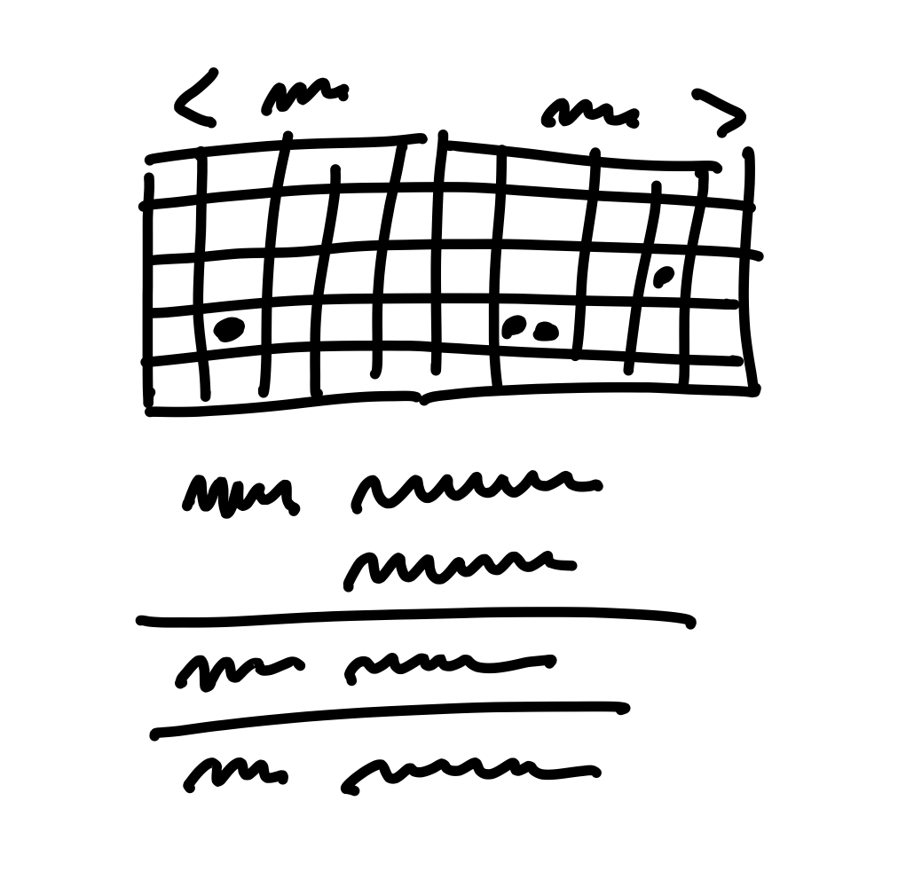

第二章 Principles of Shaping 塑形原則¶

When we shape the work, we need to do it at the right level of abstraction: not too vague and not too concrete. Product managers often err on one of these two extremes.
當我們塑形工作時，我們需要在適當的抽象層次上進行：既不過於模糊，也不過於具體。產品經理常常會犯這兩個極端的錯誤之一。
Wireframes are too concrete 線框圖太具體了¶
When design leaders go straight to wireframes or high-fidelity mockups, they define too much detail too early. This leaves designers no room for creativity. One friend put it this way:When design leaders go straight to wireframes or high-fidelity mockups, they define too much detail too early. This leaves designers no room for creativity. One friend put it this way:
當設計主管直接進入線框圖 (Wireframes) 或高保真模型時，他們過早地定義了太多細節，讓設計師沒有發揮創意的空間。一位朋友這樣形容：
I’ll give a wireframe to my designer, and then I’m saying to her: “I know you’re looking at this, but that’s not what I want you to design. I want you to re-think it!” It’s hard to do that when you’re giving them this concrete thing.
「我會給我的設計師一個線框圖，然後對她說：『我知道你正在看這個，但這不是我想要你設計的東西。我希望你重新思考它！』當你給他們一個這麼具體的東西時，這確實很難做到。」
Over-specifying the design also leads to estimation errors. Counterintuitive as it may seem, the more specific the work is, the harder it can be to estimate. That’s because making the interface just so can require solving hidden complexities and implementation details that weren’t visible in the mockup. When the scope isn’t variable, the team can’t reconsider a design decision that is turning out to cost more than it’s worth.
過度細化設計也會導致估算錯誤。雖然這聽起來有些違反直覺，但工作越具體，估算反而越困難。這是因為要讓介面完美呈現，可能需要解決許多隱藏的複雜性和實作細節，而這些在模型中並不明顯。當範圍無法調整時，團隊就無法重新考量那些成本高於其價值的設計決策。
Words are too abstract 文字太過抽象¶
On the other end of the spectrum, projects that are too vague don’t work either. When a project is defined in a few words, nobody knows what it means. “Build a calendar view” or “add group notifications” sound sensible, but what exactly do they entail? Team members don’t have enough information to make trade-offs. They don’t know what to include or leave out. A programmer who worked in that situation said:
在另一個極端，過於模糊的專案同樣行不通。當一個專案只用幾個字來定義時，沒有人知道它真正的含義。例如，「建立行事曆視圖」或「新增群組通知」聽起來合理，但它們到底包含哪些內容？團隊成員缺乏足夠的資訊來做取捨，無法判斷該納入或排除哪些元素。一位曾遇到這種情況的工程師說：
You’re solving a problem with no context. You have to be a mind reader. It’s like: “we’ll know it when we see it.”
「你在解決一個毫無背景資訊的問題，根本像是在讀心術，就像是：『看到成品後我們才知道對不對。』」
Concerning estimation, under-specified projects naturally grow out of control because there’s no boundary to define what’s out of scope.
從估算的角度來看，未明確定義的專案往往會失控膨脹，因為沒有邊界來界定哪些內容超出範圍。
Case study: The Dot Grid Calendar 案例研究：點陣行事曆¶
Let’s look at an example of how to shape a project at the right level of detail.
讓我們來看看如何以適當的細節層級來塑造一個專案。
We launched version three of Basecamp without a calendar feature. It had a “schedule” feature that just listed events one after the other without any kind of monthly, weekly or daily grid.
我們發布 Basecamp 第三版時，並沒有內建行事曆功能。當時只有一個「行程」功能，它只是將活動依序列出，沒有任何月、週或日視圖的網格顯示。
Soon after launch, customers started asking us to “add a calendar” to Basecamp. We had built calendars before and we knew how complex they are. It can easily take six months or more to build a proper calendar.
發布後不久，客戶開始要求我們「在 Basecamp 中新增行事曆」。我們之前開發過行事曆，深知它的複雜性。要打造一個完善的行事曆，往往需要六個月甚至更長的時間。
These are the kinds of things that make a calendar complicated:
以下是讓行事曆變得複雜的幾個因素：
- Dragging and dropping events between cells to move them
- 拖放事件到不同的日期格子來移動它們
- Wrapping multi-day events around the edge of the screen
- 處理跨多日事件在畫面邊緣的換行顯示
- Different views for monthly, weekly, or daily time scales
- 提供月視圖、週視圖和日視圖等不同時間範圍的顯示模式
- Dragging the edge of an event to change its duration
- 拖動事件邊緣來調整其持續時間
- Color coding events for different categories
- 以顏色標示不同類別的事件
- Handling different expectations for desktop vs. mobile interactions
- 因應桌面與行動裝置的不同互動需求
Past versions of Basecamp had calendars, and only about 10% of customers used them. That’s why we didn’t have the appetite for spending six months on a calendar. On the other hand, if we could do something to satisfy those customers who were writing us in one six week cycle, we were open to doing that.
過去的 Basecamp 版本曾經有行事曆功能，但只有大約 10% 的客戶會使用它。因此，我們不想花六個月的時間來開發行事曆。不過，如果能在一個六週的開發週期內滿足那些來信反映需求的客戶，我們是願意嘗試的。
With only six weeks to work with, we could only build about a tenth of what people think of when they say “calendar.” The question became: which tenth?
在只有六週可用的情況下，我們只能打造客戶心目中「行事曆」功能的約十分之一。問題是：哪十分之一？
We did some research (discussed in the next chapter) and narrowed down a use case that we wanted to solve. We eventually arrived at a promising concept inspired by calendars on phones. We could build a two-month, read-only grid view. Any day with an event would have a dot for each event. A list of events would appear below the calendar, and clicking a day with a dot would scroll the events for that day into view. We called it the Dot Grid.
我們進行了一些研究（詳情在下一章討論），並縮小了我們想要解決的使用情境。最終，我們受到手機行事曆的啟發，提出了一個有潛力的概念：我們可以打造一個**兩個月的唯讀網格視圖**。任何有活動的日期，該日期上就會顯示對應數量的點。行事曆下方則會顯示活動列表，點擊有點的日期時，該日期的活動會自動捲動到可見範圍。我們稱這個設計為 Dot Grid（點陣行事曆）。
The Dot Grid wasn’t a full-featured calendar. We weren’t going to allow dragging events between days. We weren’t going to span multi-day events across the grid; we’d just repeat the dots. There’d be no color coding or categories for events. We were comfortable with all these trade-offs because of our understanding of the use case.
點陣行事曆並不是一個功能完整的行事曆。我們不允許用戶**拖曳活動**到不同的日期，也不會讓**跨多日活動橫跨網格顯示**，而是僅重複顯示點。此外，不會有**顏色標示**或**活動分類**。我們對這些取捨感到滿意，因為我們清楚這個功能的使用情境。
This is the level of fidelity we used to define the solution:
這就是我們用來定義解決方案的細節層級：

Rough sketch of the Dot Grid concept
Dot Grid 概念的草圖
Note how rough the sketch is and how many details are left out. The designer had a lot of room to interpret how this should look and feel.
請注意這張草圖有多粗略，以及它省略了多少細節。設計師在視覺呈現和使用體驗上有很大的發揮空間。
At the same time, note how specific the idea is. It’s very clear how it works, what needs to be built, what’s in and what’s out.
同時，也請注意這個概念的**明確性**。它清楚地定義了運作方式、需要開發的內容，以及哪些功能被包含或排除。
At the end of the project, the finished work that the designers and programmers created looked like this:
在專案結束時，設計師和工程師完成的最終成品看起來是這樣的：

Screenshot of the Dot Grid when it launched
Dot Grid 上線時的螢幕截圖
This small example highlights a few properties of shaped work.
這個小例子突顯了「塑形工作（Shaped Work）」的一些特性。
Property 1: It’s rough 特性 1：它是粗略的¶
Work in the shaping stage is rough. Everyone can tell by looking at it that it’s unfinished. They can see the open spaces where their contributions will go. Work that’s too fine, too early commits everyone to the wrong details. Designers and programmers need room to apply their own judgement and expertise when they roll up their sleeves and discover all the real trade-offs that emerge.
在塑形階段的工作是粗略的。任何人一看就知道它還未完成，並且能清楚看到哪些地方仍有空間，等待團隊的貢獻與發揮。如果工作在初期就過於細緻，大家可能會被錯誤的細節束縛住。設計師和工程師需要空間來運用他們的專業判斷，因為當他們真正開始執行時，才會發現各種現實中的取捨與挑戰。
Property 2: It’s solved 特性 2：它已經解決了問題¶
Despite being rough and unfinished, shaped work has been thought through. All the main elements of the solution are there at the macro level and they connect together. The work isn’t specified down to individual tasks, but the overall solution is spelled out. While surprises might still happen and icebergs could still emerge, there is clear direction showing what to do. Any open questions or rabbit holes we could see up front have been removed to reduce the project’s risk.
儘管是粗略且未完成的，塑形工作已經經過深思熟慮。解決方案的主要元素已經在宏觀層面上確定並相互連接。這項工作雖然沒有細化到每個具體任務，但整體的解決方案已經明確呈現。儘管仍然可能會有意外發生，或是隱藏的問題浮現，但已經有了明確的方向指引，告訴團隊該做什麼。所有我們事先能看到的未解問題或陷阱，都已經被移除，以減少專案的風險。
Property 3: It’s bounded 特性 3：它是有邊界的¶
Lastly, shaped work indicates what not to do. It tells the team where to stop. There’s a specific appetite—the amount of time the team is allowed to spend on the project. Completing the project within that fixed amount of time requires limiting the scope and leaving specific things out.
最後，塑形工作會指出不該做的事情。它告訴團隊該在哪裡停下來。這有一個明確的限制——團隊在專案上可投入的時間量。要在這個固定的時間內完成專案，就必須限制範圍，並排除一些特定的內容。
Taken together, the roughness leaves room for the team to resolve all the details, while the solution and boundaries act like guard rails. They reduce risk and channel the team’s efforts, making sure they don’t build too much, wander around, or get stuck.
綜合來看，粗略的設計為團隊解決細節留出了空間，而解決方案和邊界則像是護欄，幫助減少風險，並引導團隊的努力，確保他們不會做過多、不會迷失方向，也不會陷入困境。
Who shapes 誰來塑形¶
Shaping is creative and integrative. It requires combining interface ideas with technical possibilities with business priorities. To do that you’ll need to either embody these skills as a generalist or collaborate with one or two other people.
塑形是創造性和綜合性的工作。它需要將介面構想、技術可能性與業務優先事項結合在一起。要做到這一點，你需要擁有這些技能，或者作為全能型人才來執行，或是與一兩個人合作。
Shaping is primarily design work. The shaped concept is an interaction design viewed from the user’s perspective. It defines what the feature does, how it works, and where it fits into existing flows.
塑形主要是設計工作。塑形出的概念是從使用者角度來看的一種互動設計。它定義了功能的作用、運作方式，以及它如何融入現有的流程中。
You don’t need to be a programmer to shape, but you need to be technically literate. You should be able to judge what’s possible, what’s easy and what’s hard. Knowledge about how the system works will help you see opportunities or obstacles for implementing your idea.
你不需要是程式設計師才能進行塑形，但你需要具備基本的技術知識。你應該能夠判斷什麼是可行的，什麼是容易的，什麼是困難的。了解系統運作的方式能幫助你發現實現想法的機會或障礙。
It’s also strategic work. Setting the appetite and coming up with a solution requires you to be critical about the problem. What are we trying to solve? Why does it matter? What counts as success? Which customers are affected? What is the cost of doing this instead of something else?
塑形也是一項戰略性工作。設定需求和提出解決方案要求你對問題進行批判性思考。我們在試圖解決什麼問題？為什麼這件事很重要？什麼樣的結果才算成功？哪些客戶會受到影響？做這件事而不是做其他事情的成本是什麼？
Shaping is a closed-door, creative process. You might be alone sketching on paper or in front of a whiteboard with a close collaborator. There’ll be rough diagrams in front of you that nobody outside the room would be able to interpret. When working with a collaborator, you move fast, speak frankly and jump from one promising position to another. It’s that kind of private, rough, early work.
塑形是一個封閉的創意過程。你可能會獨自一人畫草圖，或是與親密的合作夥伴站在白板前討論。眼前會有粗略的圖示，外面的人無法理解它們。與合作夥伴一起工作時，你會快速行動，直言不諱，並在有潛力的位置之間快速跳躍。這就是那種私密、粗略、初期的工作。
Two tracks 兩條軌道¶
You can’t really schedule shaping work because, by its very nature, unshaped work is risky and unknown. For that reason we have two separate tracks: one for shaping, one for building. During any six week cycle, the teams are building work that’s been previously shaped and the shapers are working on what the teams might potentially build in a future cycle. Work on the shaping track is kept private and not shared with the wider team until the commitment has been made to bet on it. That gives the shapers the option to put work-in-progress on the shelf or drop it when it’s not working out.
你無法真正安排塑形工作的時間表，因為本質上，未經塑形的工作具有風險且充滿不確定性。因此，我們有兩條分開的工作軌道：一條是塑形，另一條是建設。在任何六週的開發週期中，團隊正在建設先前已經塑形過的工作，而塑形者則在為未來週期中，團隊可能會建設的工作進行塑形。塑形軌道上的工作會保持私密，直到做出決策並確定要投入該工作，才會與更大的團隊分享。這樣能讓塑形者有選擇將未完成的工作擱置一旁，或在發現問題時放棄它的空間。
Steps to shaping 塑形的步驟¶
Shaping has four main steps that we will cover in the next four chapters.
塑形有四個主要步驟，我們將在接下來的四章中討論這些步驟。
Set boundaries. First we figure out how much time the raw idea is worth and how to define the problem. This gives us the basic boundaries to shape into.
設定邊界。首先，我們需要弄清楚這個原始想法值多少時間，並且如何定義問題。這會為我們提供基本的邊界，讓我們進行塑形。
Rough out the elements. Then comes the creative work of sketching a solution. We do this at a higher level of abstraction than wireframes in order to move fast and explore a wide enough range of possibilities. The output of this step is an idea that solves the problem within the appetite but without all the fine details worked out.
粗略勾畫元素。接下來進入創意階段，開始繪製解決方案。我們會在比線框圖更高的抽象層次上進行設計，以便快速推進並探索足夠範圍的可能性。這一步的輸出是一個解決問題的概念，符合需求但並未處理所有細節。
Address risks and rabbit holes. Once we think we have a solution, we take a hard look at it to find holes or unanswered questions that could trip up the team. We amend the solution, cut things out of it, or specify details at certain tricky spots to prevent the team from getting stuck or wasting time.
處理風險與盲點。當我們認為已經有了解決方案後，我們會仔細檢查它，找出可能會讓團隊陷入困境的漏洞或未解答的問題。我們會修改解決方案、刪除某些部分，或在一些棘手的地方具體化細節，以防止團隊卡住或浪費時間。
Write the pitch. Once we think we’ve shaped it enough to potentially bet on, we package it with a formal write-up called a pitch. The pitch summarizes the problem, constraints, solution, rabbit holes, and limitations. The pitch goes to the betting table for consideration. If the project gets chosen, the pitch can be re-used at kick-off to explain the project to the team.
撰寫提案。當我們認為塑形工作足夠成熟，可能值得投入時，我們會用一份正式的提案來包裝它，這份提案被稱為「Pitch」。提案總結了問題、限制、解決方案、風險點和局限性。這份提案會提交給決策者考量。如果專案被選中，這份提案可以在專案啟動時用來向團隊解釋專案內容。